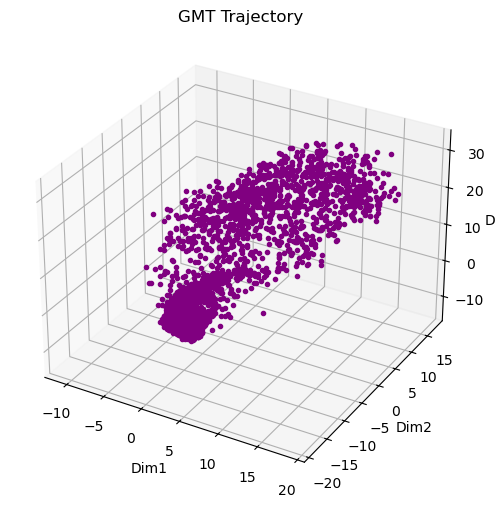

At Sanguine, we’ve been developing a set of voice-driven capabilities for speaker verification and other identity-based tasks, inspired by audio intelligence systems such as Shazam.
Walk into any room and sound is everywhere, but machines rarely hear it the way we do. Voices, footsteps, even the hum of electronics—they carry patterns that can tell you who’s speaking, what’s happening, and when it matters. Our lab is using Geometric Trajectory Matrices to help machines make sense of these patterns in real time.
Traditional features like Mel-Frequency Cepstral Coefficients capture slices of sound in time. They’re snapshots—useful, but incomplete. Modern embedding models go further, but often compress entire utterances into a single vector, losing the temporal structure of speech.
Geometric Trajectory Matrices take a different approach. We start by mapping audio into a low-dimensional trajectory:
\[ \mathbf{z}_1, \mathbf{z}_2, \dots, \mathbf{z}_T \in \mathbb{R}^k \]
Each \(\mathbf{z}_t\) represents the voice at a moment in time. Together, they form a path through acoustic space—the vocal trajectory.
Instead of only tracking local motion, we explicitly model the geometry of this trajectory by capturing relationships between all pairs of time steps.
Distance geometry:
\[ D_{ij} = \|\mathbf{z}_i - \mathbf{z}_j\| \]
This matrix encodes the global shape of the trajectory—how similar or different any two moments in time are.
Inner-product structure:
\[ G_{ij} = \mathbf{z}_i^\top \mathbf{z}_j \]
This captures angular relationships and correlations across time, revealing how the trajectory is oriented in space.
Temporal dynamics:
\[ \Delta \mathbf{z}_t = \mathbf{z}_{t+1} - \mathbf{z}_t \]
These local motion vectors describe how the voice evolves from frame to frame—capturing articulation patterns and speaking style.
The vocal path is the journey of your articulators—the tongue, lips, jaw, and vocal cords—through acoustic space. Every frame in the matrix is a snapshot along that journey. The difference between frames tells you the local step. Geometric invariants, like curvature:
\[ \kappa_t = \frac{\|\Delta \mathbf{z}_t \times \Delta \mathbf{z}_{t+1}\|}{\|\Delta \mathbf{z}_t\|^3} \]
or alignment between two trajectories:
\[ S(i,j) = \frac{\operatorname{Tr}(\mathbf{Z}_i^\top \mathbf{Z}_j)}{\|\mathbf{Z}_i\|_F \|\mathbf{Z}_j\|_F} \]
give models a way to measure similarity and structure in a way that is both interpretable and robust.
Together, these components form the Geometric Trajectory Matrix: a structured representation of both where the voice is and how it moves.
To make this concrete, we can construct a 3D trajectory from PCA-reduced features. Each axis corresponds to a group of principal components, capturing the main directions of variance. The trajectory moves through this space as time progresses, showing the overall evolution of the dataset across frames. Note that because speaker identity is not tracked in this dataset, the trajectory represents a combined view of all speakers rather than an individual speaker.

Figure: 3D PCA Trajectory showing how vocal features evolve over time. Color gradient from purple to yellow indicates the progression of time. This trajectory aggregates all speakers in the dataset since individual speaker IDs are not available.
By examining the trajectory, patterns of motion—curves, twists, and transitions—become visible, providing insight into temporal dynamics that are not captured by static representations.
Today, most systems that rely on voice for identity reduce speech to static representations. These approaches perform well under controlled conditions, but often degrade in real-world settings where noise, variability, and temporal structure matter.
This limitation shows up across voice authentication systems and autonomous agents—anywhere identity must be inferred under uncertainty. In warehouse robotics, for example, operator authentication often happens in noisy, fast-moving environments where reliability is critical. The issue is not just model capacity, but how the signal itself is represented. When temporal structure is compressed away, important information about consistency and evolution is lost.
We think the problem is upstream. Not just in the models, but in the representation itself.
Building on prior work in voice biometrics, we introduce a data construct we call the vocal path. Instead of collapsing time, it preserves it. Instead of summarizing, it traces. It captures how a voice moves—not just what it looks like.
We believe this shift enables a range of high-impact applications, from operator authentication in warehouse robotics to persistent identity for agents operating in irreversible decision contexts.
We’ve created a notebook that walks through building a simple Geometric Trajectory Matrix here: View Notebook . Reach out to us at team@sanguineai.xyz to learn more.